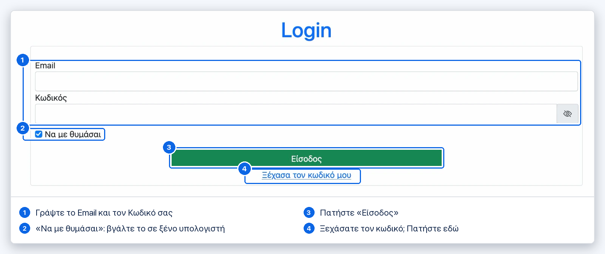
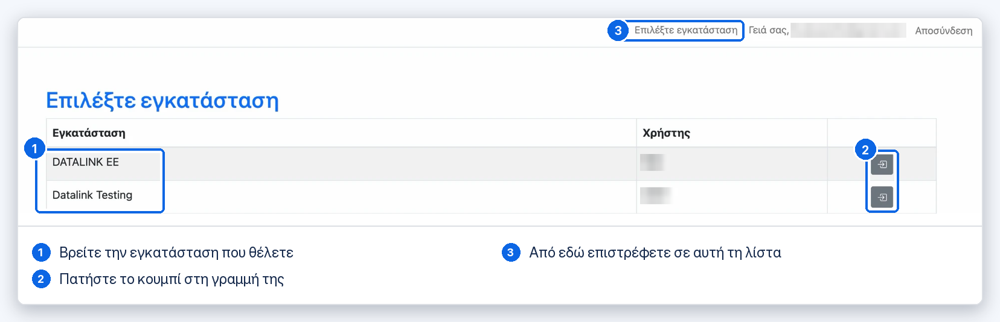
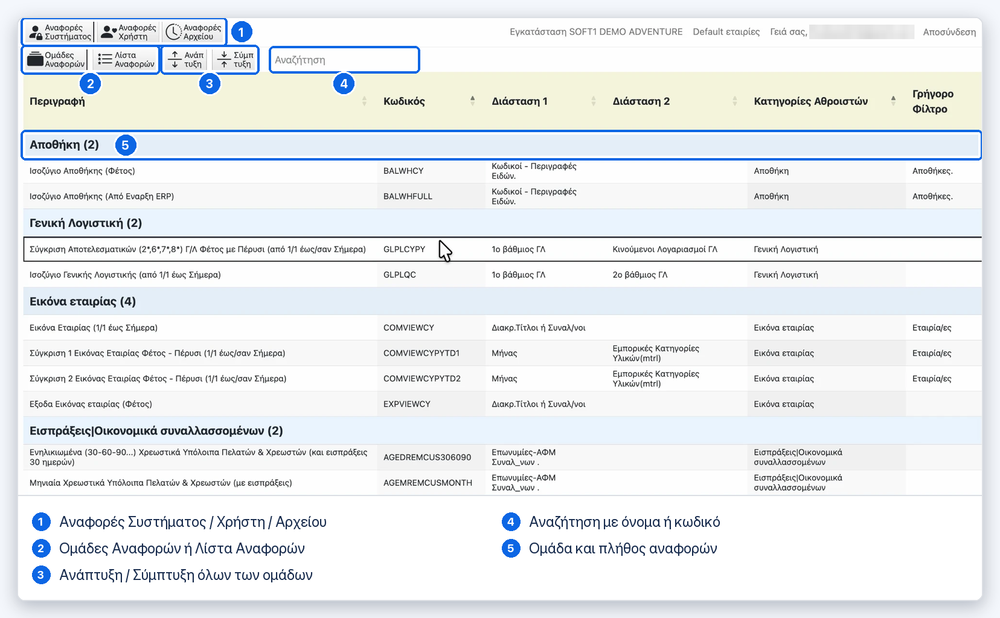
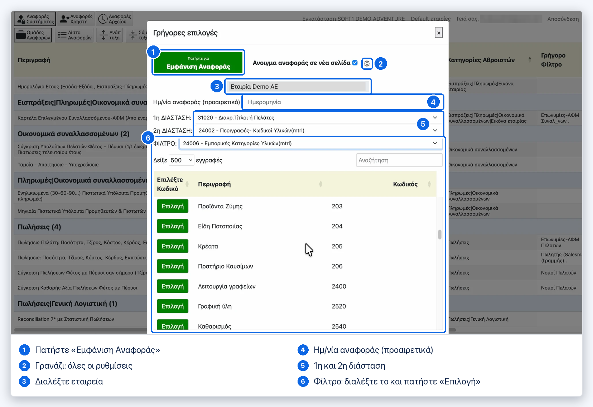

Ξεκινώντας με το MARS
Τι είναι το MARS, πώς συνδέεστε, πώς κινείστε στις οθόνες και πώς βγάζετε την πρώτη σας αναφορά σε 5 βήματα.
Τι είναι το MARS#
Το MARS (My Advanced Reporting System) είναι ένα σύστημα αναφορών που δουλεύει πάνω στα δεδομένα του SoftOne σας. Δεν χρειάζεται να γράψετε κώδικα ούτε να ζητήσετε νέα αναφορά από το IT. Διαλέγετε τι θέλετε να δείτε και το MARS φτιάχνει την αναφορά.
Κάθε αναφορά απαντά σε μια ερώτηση της μορφής:
«Δείξε μου [αθροιστές] ανά [διάσταση], για [περίοδο], μόνο για [φίλτρα].»
Για παράδειγμα: «Δείξε μου την Καθαρή Αξία Πωλήσεων ανά πελάτη, φέτος και πέρυσι, μόνο για την ομάδα ειδών Χ».
Σύνδεση#
- Ανοίξτε τη διεύθυνση του MARS: marstechnology.gr.
- Γράψτε το Email και τον Κωδικό σας. Με το εικονίδιο «μάτι» δίπλα στον κωδικό βλέπετε τι πληκτρολογείτε.
- Το Να με θυμάσαι είναι τσεκαρισμένο από πριν, ώστε να μη σας ζητά κωδικό σε κάθε επίσκεψη. Αν ο υπολογιστής δεν είναι δικός σας, ξετσεκάρετέ το.
-
Πατήστε Είσοδος.

Οθόνη εισόδου: Email, Κωδικός, «Να με θυμάσαι», «Είσοδος», «Ξέχασα τον κωδικό μου» (χωρίς συμπληρωμένο κωδικό) -
Αν έχετε πρόσβαση σε περισσότερες από μία εγκαταστάσεις, εμφανίζεται η οθόνη Επιλέξτε εγκατάσταση. Πατήστε το κουμπί στη γραμμή της εγκατάστασης που θέλετε. Αν έχετε μόνο μία, πηγαίνετε κατευθείαν στη λίστα αναφορών.

Οθόνη «Επιλέξτε εγκατάσταση» με 2+ εγκαταστάσεις
Ξεχάσατε τον κωδικό; Πατήστε Ξέχασα τον κωδικό μου και ακολουθήστε τον σύνδεσμο που θα έρθει στο email σας. Ο σύνδεσμος ισχύει μόνο για λίγα λεπτά.
Πλοήγηση#
Στο πάνω μέρος της οθόνης βλέπετε:
- Το λογότυπο του MARS. Σας γυρίζει πάντα στη λίστα αναφορών.
- Εγκατάσταση … Δείχνει σε ποια εγκατάσταση δουλεύετε. Πατήστε το για να αλλάξετε.
- Default εταιρίες. Ορίζετε ποιες εταιρείες θα είναι επιλεγμένες από πριν σε κάθε αναφορά.
- Αποσύνδεση.
Η κεντρική οθόνη είναι η λίστα αναφορών. Από εκεί:
- Με τα κουμπιά Αναφορές Συστήματος (οι έτοιμες), Αναφορές Χρήστη (οι δικές σας) και Αναφορές Αρχείου (οι παλιές εκτελέσεις) διαλέγετε ποιες αναφορές βλέπετε.
- Με τα κουμπιά Ομάδες Αναφορών και Λίστα Αναφορών διαλέγετε αν θα φαίνονται σε ομάδες ή σε απλή λίστα.
- Με τα κουμπιά Ανάπτυξη και Σύμπτυξη ανοίγετε ή κλείνετε όλες τις ομάδες.
- Με το πεδίο Αναζήτηση βρίσκετε μια αναφορά από το όνομα ή τον κωδικό της.

Η πρώτη μου αναφορά σε 5 βήματα#
- Βρείτε μια αναφορά. Στη λίστα, επιλέξτε Αναφορές Συστήματος και γράψτε στην Αναζήτηση μια λέξη, π.χ. «πωλήσεις».
- Πατήστε πάνω της. Ανοίγει το παράθυρο Γρήγορες επιλογές.
- Διαλέξτε εταιρεία. Βεβαιωθείτε ότι είναι επιλεγμένη τουλάχιστον μία εταιρεία από τη λίστα.
- Αλλάξτε, αν θέλετε, τη διάσταση. Στο 1η ΔΙΑΣΤΑΣΗ: διαλέξτε π.χ. πελάτες αντί για είδη. Αν δεν αλλάξετε τίποτα, η αναφορά τρέχει όπως είναι.
- Πατήστε «Εμφάνιση Αναφοράς». Η αναφορά ανοίγει σε νέα καρτέλα (αν είναι τσεκαρισμένο το Ανοιγμα αναφοράς σε νέα σελίδα).
Στην οθόνη αποτελεσμάτων μπορείτε να φιλτράρετε, να ταξινομήσετε, να κάνετε drill-down και να εξάγετε σε Excel ή PDF.

Συμβουλές και συχνά λάθη#
- «Παρακαλώ επιλέξτε τουλάχιστον μια εταιρεία». Δεν έχετε επιλέξει εταιρεία στις Γρήγορες επιλογές. Διαλέξτε μία και ξαναπατήστε.
- Κάθε «Εμφάνιση Αναφοράς» κρατιέται. Τη βρίσκετε αργότερα στις Αναφορές Αρχείου, με τα αποτελέσματα όπως ήταν εκείνη τη στιγμή.
- Θέλετε να κρατήσετε μια αναφορά όπως τη ρυθμίσατε; Από τα αποτελέσματα, πατήστε Προσθήκη σε Αναφορές Χρήστη. Θα τη βρίσκετε στις Αναφορές Χρήστη.
- Βλέπετε λιγότερα δεδομένα από έναν συνάδελφο; Είναι φυσιολογικό. Ο διαχειριστής ορίζει τι βλέπει ο καθένας (π.χ. μόνο τις δικές του πωλήσεις).